VERBO DESKTOP
Lee, estudia y prepara tus enseñanzas en Linux.
Verbo Desktop reúne la Biblia, tus módulos compatibles de e-Sword y MySword y herramientas de preparación en una aplicación gratuita para Linux.
Linux
macOS Próximamente
Windows Próximamente
Linux disponible ahora (Beta 0.9). macOS y Windows llegarán próximamente.
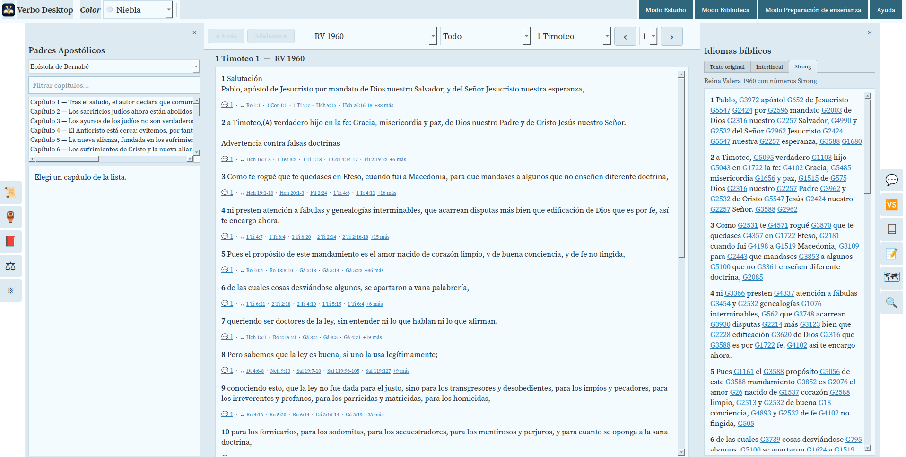
e-Sword
MySword
Verbo
🐧LINUX NATIVO
Linux ya tenía software bíblico. Ahora puede tener la biblioteca.
Importa módulos compatibles procedentes de ecosistemas de Windows y Android y utilízalos directamente en Verbo, sin tener que ejecutar la aplicación dentro de Windows.
●Verbo Desktop◌ ◌ ◌
Lo que antes vivía separado puede reunirse en Verbo.
Módulos compatibles de e-Sword, MySword y Verbo se reúnen en una sola biblioteca. Hoy funciona en Linux; las versiones para macOS y Windows llegarán más adelante.
e-SwordWindows
MySwordAndroid
VerboModules
Verbo Desktop
🐧Linux
●macOS Próximamente
Windows Próximamente
LINUX DISPONIBLE · MACOS Y WINDOWS PRÓXIMAMENTE
Una experiencia de escritorio real, hoy en Linux.
🐧Linux
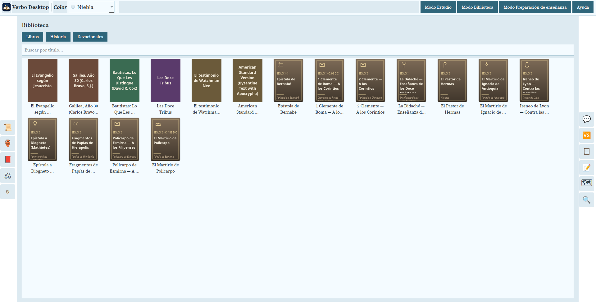
La prioridad del lanzamiento: una biblioteca bíblica amplia en un entorno Linux nativo.
●macOSPróximamente
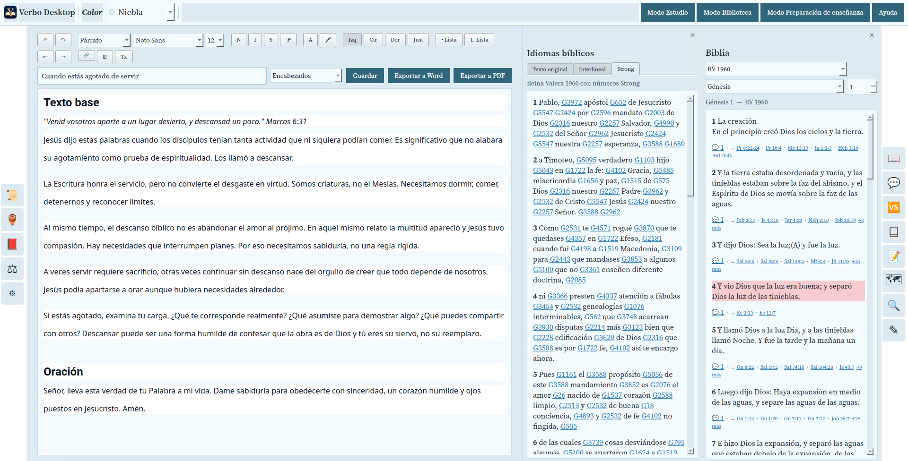
Cuando llegue la versión para Mac, podrás importar tus recursos y trabajar en Verbo desde tu Mac.
WindowsPróximamente
Llegará más adelante: la misma biblioteca para reunir recursos, estudio y preparación en Windows.
Estudia. Prepara. Lee.
Verbo no es solo un importador. La aplicación cambia de espacio según lo que necesitas hacer.
01
Modo Estudio
Biblia, referencias cruzadas, idiomas bíblicos, Strong y recursos alrededor del texto.
02
Preparación de enseñanza
Editor, Biblia y herramientas de estudio trabajando juntos para bosquejos, clases y predicaciones.
03
Modo Biblioteca
Lee y organiza libros, historia, devocionales y otros recursos en una biblioteca visual.
Mucho más que abrir una Biblia.
Recursos visuales, lingüísticos, históricos y personales permanecen cerca del texto.
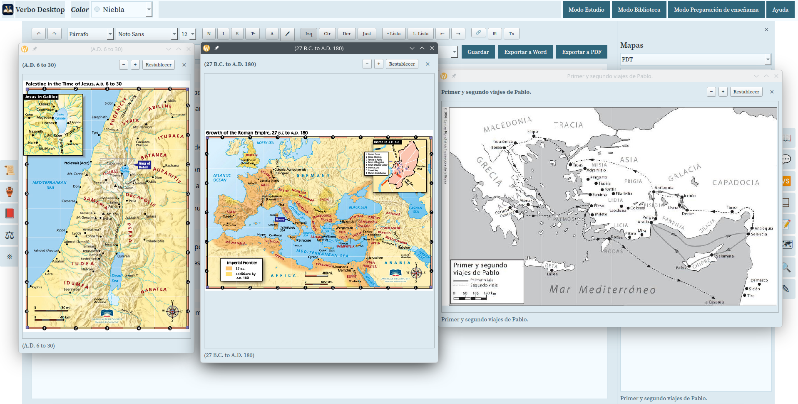
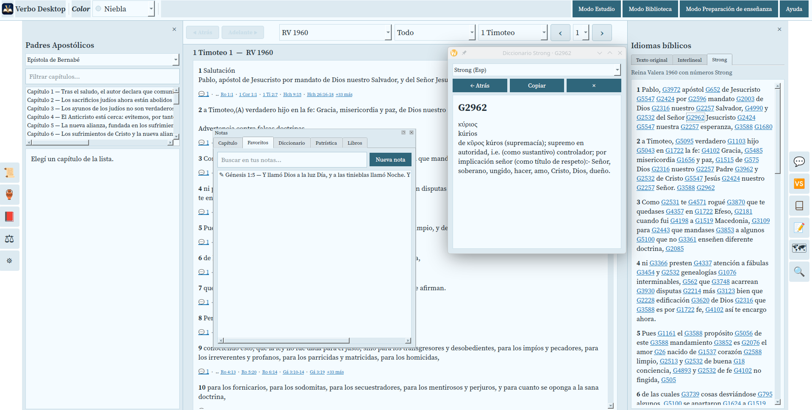
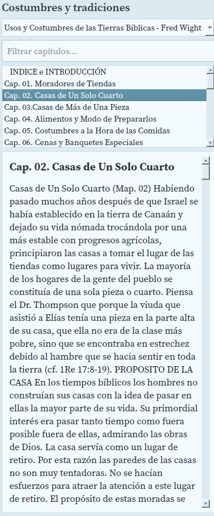
TU BIBLIOTECA PERSONAL
De los Padres Apostólicos a tus próximos recursos.
Verbo también es un espacio de lectura. Libros, historia, devocionales, Padres Apostólicos y otros recursos pueden convivir con tu estudio bíblico.
- Padres Apostólicos
- Historia y contexto
- Devocionales y libros
- Recursos importados por el usuario
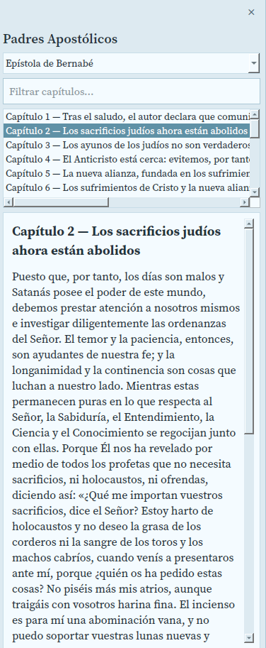
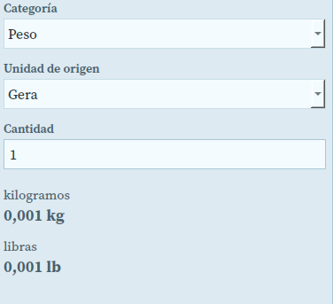
Descarga tus primeros módulos de los Padres Apostólicos en español
Nueve obras, una por autor, traducidas por Verbo y listas para importar.
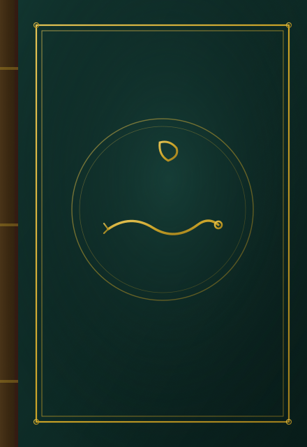
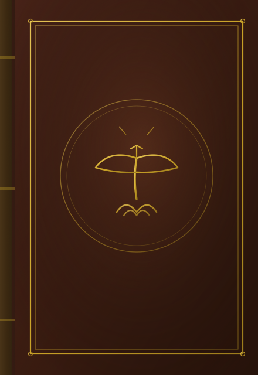
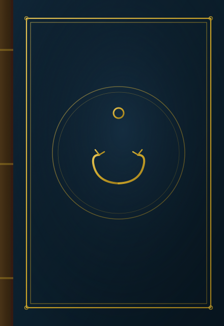
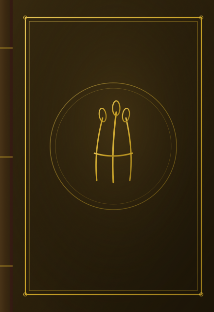
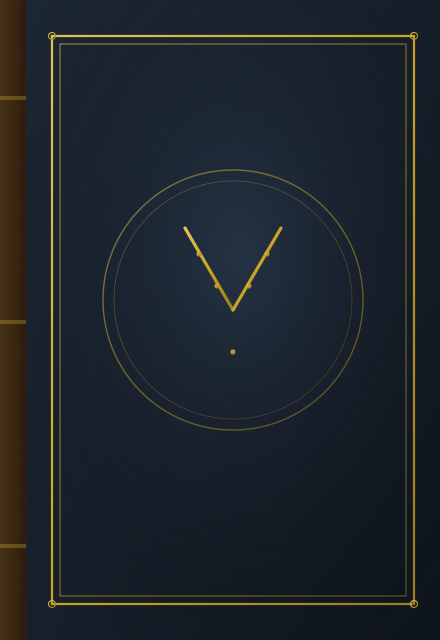
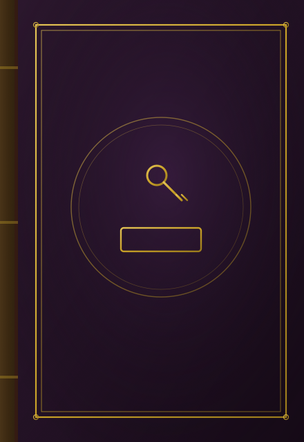
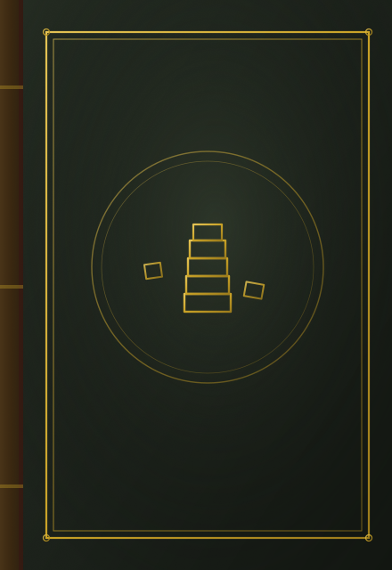
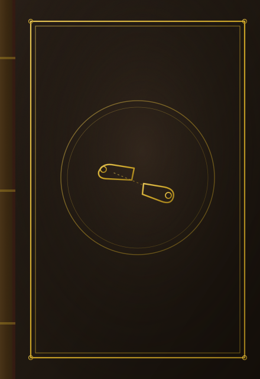
VERBO DESKTOP
Tu biblioteca. Tu sistema. Tu espacio de estudio.
Paquetes de Linux disponibles (.deb y .rpm), Beta 0.9. macOS y Windows llegarán próximamente.
Requisitos y estado de la versión
Linux de 64 bits (amd64/x86_64). El .deb requiere glibc 2.36 o posterior, por ejemplo Linux Mint 22. El .rpm está preparado para openSUSE Tumbleweed. No se garantiza compatibilidad con otras distribuciones.
Beta 0.9 (versión 0.9.0, octubre de 2026) para Linux Mint 22 o superior y openSUSE Tumbleweed / Leap 16.
Privacidad y tus recursos
La biblioteca, las notas y los ajustes se guardan en el equipo; en Linux los datos de la aplicación están en ~/.local/share/verbo-desktop. Los recursos locales pueden consultarse sin conexión. Descargar módulos, abrir enlaces o usar fuentes remotas requiere internet y comunica con sus proveedores.
El formulario de reporte de esta página abre tu cliente de correo con el texto que escribas; tú decides si lo envías. La página guarda tu elección de idioma en el navegador. Cada Biblia o módulo conserva sus propios permisos de uso.
Política de privacidadCómo instalar Verbo Desktop
- Descarga el paquete para tu sistema: .deb para Linux Mint y la familia Debian, .rpm para openSUSE.
- Abre el archivo descargado con doble clic e instálalo con el instalador de software de tu sistema.
Verificación avanzada (opcional)
El RPM lleva firma integrada; el DEB usa una firma .asc separada que el instalador gráfico no comprueba. Descarga la clave, la firma y el manifiesto de la misma entrega. Si el nombre, la versión o la verificación no coinciden, no instales el archivo.
Las descargas se alojan en MEGA. Antes de instalar, comprueba que el nombre del archivo y su suma SHA-256 coincidan con el manifiesto firmado.
GPG: 736AA0E9E097E9640A371274C61F1C969BD3DAA7
Compara la huella completa de la clave antes de confiar en ella. Una firma correcta acredita el origen del paquete; no garantiza compatibilidad con tu equipo.
gpg --show-keys --with-fingerprint verbo-desktop-public.key
gpg --import verbo-desktop-public.key
gpg --output SHA256SUMS.verificado --decrypt SHA256SUMS.asc
sha256sum --ignore-missing -c SHA256SUMS.verificado
# DEB
gpg --verify verbo-desktop_0.9.0~dev1_amd64.deb.asc verbo-desktop_0.9.0~dev1_amd64.deb
sudo apt install ./verbo-desktop_0.9.0~dev1_amd64.deb
# RPM
sudo rpm --import verbo-desktop-public.key
rpm -K verbo-desktop-0.9.0~dev1-1.x86_64.rpm
sudo zypper install ./verbo-desktop-0.9.0~dev1-1.x86_64.rpm